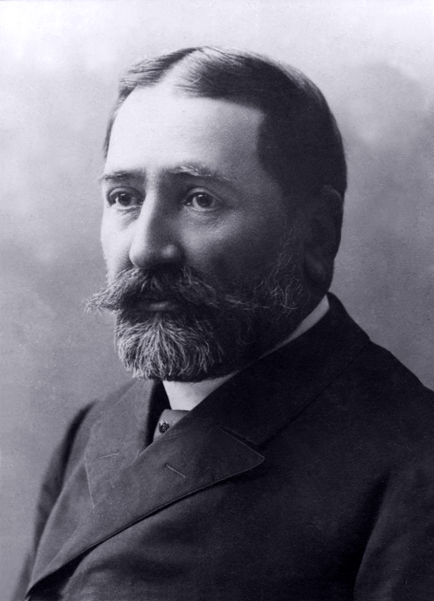

ილია ჭავჭავაძის ბიოგრაფია
დაბადების ადგილი: სოფელი ყვარელი, ყვარელის მუნიციპალიტეტი.
დიდი ქართველი მწერალი, პოეტი, პუბლიცისტი, პოლიტიკური და საზოგადო მოღვაწე, საქართველოს 1861—1907 წლების ეროვნულ-განმათავისუფლებელი მოძრაობის ლიდერი. დაიბადა გაღარიბებული თავადის ოჯახში. 1848 წლიდან სწავლობდა თბილისის კერძო პანსიონში; 1852 წლიდან - თბილისის გიმნაზიაში, 1857-1861 წლებში კი პეტერბურგის უნივერსიტეტის იურიდიულ ფაკულტეტზე. სტუდენტობის წლები მისთვის უაღრესად მნიშვნელოვანი აღმოჩნდა, როგორც პიროვნებისა და მოქალაქის მომზადებისა და მწერლის ფორმირების სრულყოფისათვის. ამ წლებშივე დაიწერა ი. ჭავჭავაძის ძლიერი მხატვრული ინდივიდუალობით აღბეჭდილი და მძაფრი მოქალაქეობრივი პათოსით განმსჭვალული, ფართო საზოგადოებისათვის რეზონანსის მქონე ნაწარმოებები, რომელთაც აღმავალი ეტაპი შექმნეს XIX საუკუნის ქართული ლიტერატურისა და საერთოდ ქართული მხატვრული აზროვნების ისტორიაში: პოემა "აჩრდილი" (1859 წ.), რომელიც უმწვავეს ეროვნულ და სოციალურ პრობლემებზე ღრმა დაფიქრების ნაყოფია და ნათელი მერმისის რწმენით არის გამსჭვალული; "ქართვლის დედა" (1860 წ.), "კაკო ყაჩაღი", "მუშა", "ელეგია" და სხვ. ამავე პერიოდს ეხება მისი მხატვრული პროზის შესანიშნავი ნიმუშები, რომლებმაც უდიდესი როლი ითამაშეს ქართული კრიტიკული რეალიზმის განვითარებაში. ი. ჭავჭავაძის რუსეთიდან საქართველოში დაბრუნების შემდეგ დიდი განცდა და მღელვარება აისახა მის ნაწარმოებებში. კერძოდ, "მგზავრის წერილებში", რომელიც არა მარტო ავტორის ან "თერგდალეულების" მიზნებსა და ამოცანებს, არამედ მთელი ქართველი ხალხის სასიცოცხლო მოთხოვნილებებს, საზოგადოდ ეროვნულ-განმათავისუფლებელი მოძრაობის უწმინდეს იდეალებს გამოხატავს. 1863 წელს ი. ჭავჭავაძის მიერ დაარსებული ჟურნალი "საქართველოს მოამბე", მიუხედავად უმძიმესი საცენზურო პირობებისა, ეროვნულ-განმათავისუფლებელი მოძრაობის ჭეშმარიტ მედროშედ იქცა. საქართველოში დამკვიდრებული ი. ჭავჭავაძე აქტიურად ჩაება ფართო პოლიტიკურ-საზოგადოებრივ საქმიანობაში და უდიდეს ფინანსურ დახმარებას უწევდა მას. 70-90-იან წლებში დაიწყო ი. ჭავჭავაძის მრავალრიცხოვანი ნაშრომებისა და წერილების გამოქვეყნება, რომლებშიც ვლინდებოდა მისი ძლიერი ინტელექტი, ფაქტებისა და მოვლენების იშვიათი აღქმისა და გაანალიზების უნარი. მის პუბლიცისტურ შემოქმედებასა და საზოგადოებრივ მოღვაწეობაში დიდი ადგილი დაეთმო სახალხო განათლებისა და მოზარდი თაობის აღზრდის საკითხებს, რომლებმაც დიდი როლი შეასრულა ქართული პედაგოგიური მეცნიერებისა და ქართული სახალხო ეროვნული სკოლის ჩამოყალიბების საქმეში. ი. ჭავჭავაძეს ეპოქალური დამსახურება მიუძღვის ქართველი ერის წინაშე, იგი იყო XIX საუკუნის მეორე ნახევრის საქართველოს ეროვნული მოღვაწე და ქართული ეროვნულ-განმათავისუფლებელი მოძრაობის სულისჩამდგმელი და წინამძღოლი. ქართული მართლმადიდებელი სამოციქულო ეკლესიის მიერ ილია ჭავჭავაძე შერაცხულია წმინდანად, სახელით წმინდა ილია მართალი.